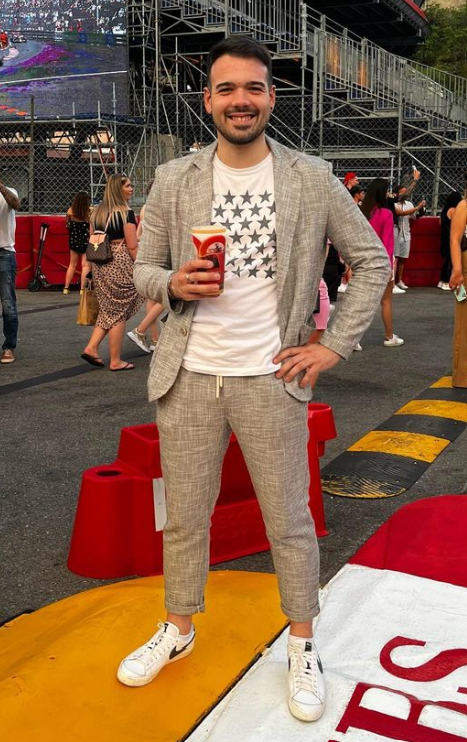

Sono nato a Savona il 2 Marzo del 1994. Mi sono diplomato al Liceo Classico-linguistico G. Chiabrera, dopodichè ho iniziato a lavorare in ambito della sicurezza in una nota ditta locale. Nel 2023 mi sono iscritto al corso Full-stack developer di Epicode per dare una svolta alla mia vita e poter lavorare nel mondo tech.
Mi piace viaggiare e visitare luoghi nuovi per poter conoscere differenti culture, cibi, persone. Sono amante dello sport di cui seguo con passione il calcio, la Formula 1 e il tennis. Mi tengo in forma andando regolarmente in palestra per fortificare il fisico e la mente.
Sono curioso, sensibile e con una gran voglia di imparare sempre qualcosa di nuovo.
-
Le mie competenze
- Capace di lavorare in gruppo
- Buona manualità nei lavori pratici
- Attenzione e cura dei dettagli
-
Competenze da acquisire
- Conoscenza dei linguaggi di programmazione
- Piena padronanza nello sviluppo delle web app
- Saper gestire con sicurezza tutti i progetti affidatimi
| LANGUAGE | LEVEL |
| English | B1 |
| French | B1 |
| Spanish | B2 |
| COMPANY | PERIOD |
| Isat Proget | 2015-2022 |
| Generali Italia | 2022-2023 |
| Pani Elettricità | 2023 |